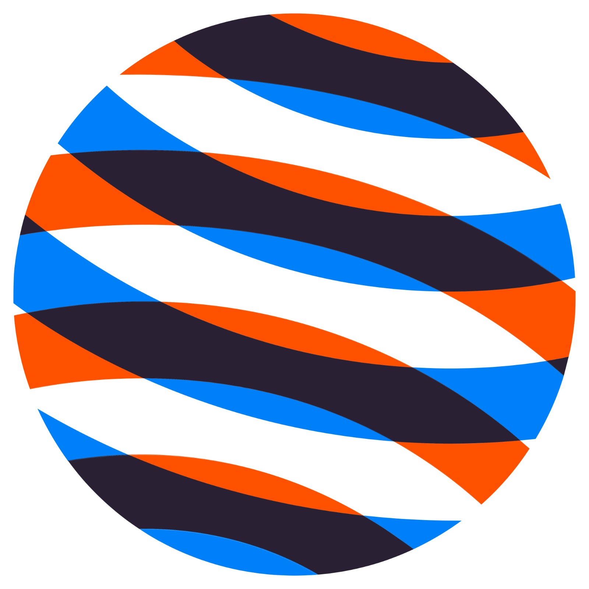

🌙

⚡
Advanced Electricity & Magnetism Learning Lab
User Guide
Progress
reset
0 / 25 explored
×
🏅
Certificate of Completion
Advanced Electricity & Magnetism Learning Lab · Industrial Workshop
Student Name
has successfully completed the
Workshop
workshop with a final score of
0%
, demonstrating practical understanding of the underlying electromagnetic principles and their industrial application.
Dr. S. K. Jain
Associate Professor, Physics
Date of Completion